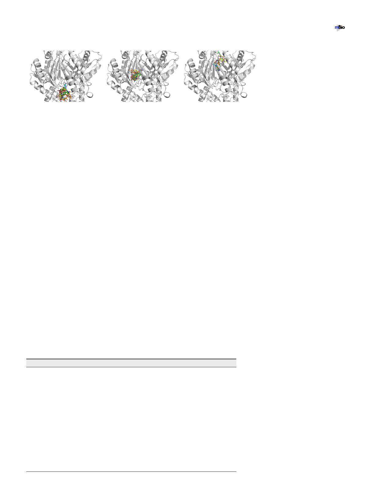

Cryo-EM Structure of A. baumannii Efflux Pump
®
A.
B.
C.
FIG 5 Docking of antibiotics to the structure of AdeB. (A to C) A composite figure showing the locations of the
predicted bound antibiotics at the periplasmic cleft entrance (A), proximal multidrug binding site (B), and distal
multidrug binding site (C). The antibiotics shown in stick models are tigecycline (green), imipenem (cyan),
ciprofloxacin (pink), erythromycin (orange), and gentamicin (yellow).
proton relay network. However, the presence of drugs may promote the transfer of
protons, which power up this membrane protein to shift its transient state to export
drug molecules out of the bacterial cell.
It appears that the AdeB pump preferentially takes the resting conformational state
in the absence of substrates, where the periplasmic cleft is closed. In this state, D408,
which is one of the most critical residues within the proton relay network, interconnects
with the side-chain oxygen of T446 to form a hydrogen bond (Fig. 6A). The carboxylate
oxygen of this aspartate is also 3.6 Å away from the backbone oxygen of I442,
interacting with this isoleucine via electrostatic interactions. When a drug molecule
arrives at the cleft entrance, the presence of this drug molecule may trigger a major
conformational change, which opens the periplasmic cleft and shifts the conforma-
tional state of the pump to its binding form (Fig. 6B). This conformational state
facilitates the binding of the drug molecule at the proximal drug-binding site. The
bound drug molecule will then pass through the G-loop to arrive the distal drug-
binding site.
The opening of the periplasmic cleft may trigger a major structural rearrangement
of the transmembrane helices of AdeB. As seen in the cases of AcrB and CmeB, TM8
may shift in location and move away from the core of the transmembrane helices in
order to accommodate the large change in structural conformation associated with the
opening of the periplasmic cleft. Coupled with the movement of TM8, TM5 may also
follow the motion of TM8 and switch in the same direction to deviate from the core of
the transmembrane helices. The movement of TM5 may weaken the interactions
between D408 and T446 and between D408 and I442, leading to the release of D408
from these two residues. This change may then trigger the rearrangement of hydrogen
bonds within the proton relay network. Thus, the side chain of K973 may flip toward
TABLE 2 Docking of antibiotics to AdeB
Binding site
Periplasmic cleft
Antibiotic
Ciprofloxacin
Erythromycin
Gentamicin
Imipenem
Tigecycline
Proximal site
Ciprofloxacin
Erythromycin
Gentamicin
Imipenem
Tigecycline
Distal site
Ciprofloxacin
Erythromycin
Gentamicin
Imipenem
Tigecycline
July/August 2019 Volume 10 Issue 4 e01295-19
Binding affinity (kcal/mol)
Ϫ7.6
Ϫ8.5
Ϫ7.7
Ϫ6.7
Ϫ8.9
Ϫ7.3
Ϫ9.0
Ϫ7.4
Ϫ6.9
Ϫ8.7
Ϫ7.2
Ϫ8.6
Ϫ7.1
Ϫ6.8
Ϫ8.3
mbio.asm.org 9